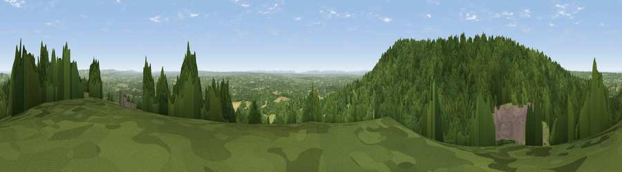

Viewpoint near Coldharbour
#28984 in England · top 33% of its area beats it · near ColdharbourWhere it is
The exact computed spot (TQ 15375 44025). Click the marker for map links.
The view, rendered

A 360° render of this exact spot computed from the terrain model, tree cover and land cover — summer colours, afternoon light, calibrated against photographs of famous viewpoints. Real trees, hedges and buildings will differ in detail.
The panorama
Grey silhouette: terrain skyline in each direction (720 bearings, Earth curvature and refraction included). Dashed green: skyline with trees (+15 m) and buildings (+8 m) as obstacles. Blue strip: how far the ground is visible on each bearing.
Where the view opens
Wedge length = distance to the farthest visible ground on that bearing (vegetation-aware). Rings at 10, 25 and 50 km.
What fills the view
63% woodland · 26% grassland · 9% cropland · 2% built-up
Angular shares of the visible panorama (visual magnitude), not map area. Landscape diversity 0.41 (0–1 Shannon).
Key numbers
More beautiful places nearby
The staircase of upgrades: each row has a higher view potential than everything closer. Driving times are estimates from straight-line distance, calibrated against real road routing — check an actual route before setting out.
| Place | Direction | Drive | Score |
|---|---|---|---|
| Viewpoint near Coldharbour | NNE · 0 km | ~2 min | 56.5 |
| Viewpoint near Coldharbour | SW · 1 km | ~3 min | 71.3 |
| Viewpoint near Fernhurst | WSW · 28 km | ~44 min | 75.1 |
| Chanctonbury Ring | S · 32 km | ~50 min | 87.0 |
| Firle Beacon | SE · 50 km | ~72 min | 88.9 |
| Viewpoint near Niton | SW · 94 km | ~119 min | 89.2 |
| Viewpoint near West Bexington | WSW · 170 km | ~191 min | 89.5 |
| The Knoll | WSW · 171 km | ~192 min | 91.0 |
51.18382, -0.35062 · source: screening · position refined by local search. Computed location — check access rights before visiting.